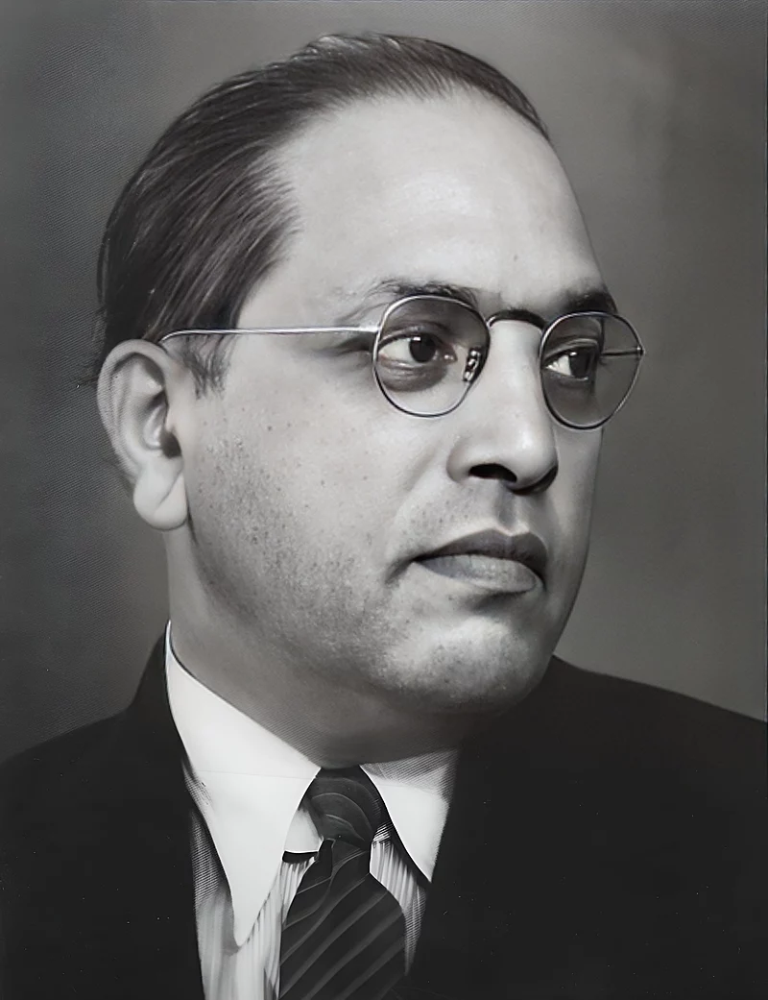

भीमराव आम्बेडकर
1891-1956
प्रारंभिक जीवन
भीमराव आम्बेडकर जी का जन्म 14 अप्रैल 1891 को ब्रिटिश भारत के मध्य
भारत प्रांत (अब मध्य प्रदेश) में स्थित महू नगर सैन्य छावनी में हुआ
था।वे रामजी मालोजी सकपाल और भीमाबाई की १४ वीं व अंतिम संतान थे। उनका
परिवार कबीर पंथ को माननेवाला मराठी मूूल का था और वो वर्तमान महाराष्ट्र
के रत्नागिरी जिले में आंबडवे गाँव के निवासी थे ।वे हिंदू महार जाति से
संबंध रखते थे, जो तब अछूत कही जाती थी और इस कारण उन्हें सामाजिक और
आर्थिक रूप से गहरा भेदभाव सहन करना पड़ता था। भीमराव आम्बेडकर के पूर्वज
लंबे समय से ब्रिटिश ईस्ट इंडिया कंपनी की सेना में कार्यरत रहे थे और
उनके पिता रामजी सकपाल, भारतीय सेना की महू छावनी में सेवारत थे तथा यहां
काम करते हुये वे सूबेदार के पद तक पहुँचे थे। उन्होंने मराठी और
अंग्रेजी में औपचारिक शिक्षा प्राप्त की थी। अपनी जाति के कारण बालक भीम
को सामाजिक प्रतिरोध का सामना करना पड़ रहा था। विद्यालयी पढ़ाई में
सक्षम होने के बावजूद छात्र भीमराव को छुआछूत के कारण अनेक प्रकार की
कठनाइयों का सामना करना पड़ता था। 7 नवम्बर 1900 को रामजी सकपाल ने
सातारा की गवर्न्मेण्ट हाइस्कूल में अपने बेटे भीमराव का नाम भिवा रामजी
आंबडवेकर दर्ज कराया। उनके बचपन का नाम 'भिवा' था। आम्बेडकर का मूल उपनाम
सकपाल की बजाय आंबडवेकर लिखवाया था, जो कि उनके आंबडवे गाँव से संबंधित
था। क्योंकी कोकण प्रांत के लोग अपना उपनाम गाँव के नाम से रखते थे, अतः
आम्बेडकर के आंबडवे गाँव से आंबडवेकर उपनाम स्कूल में दर्ज करवाया गया।
बाद में एक देवरुखे ब्राह्मण शिक्षक कृष्णा केशव आम्बेडकर जो उनसे विशेष
स्नेह रखते थे, ने उनके नाम से 'आंबडवेकर' हटाकर अपना सरल 'आम्बेडकर'
उपनाम जोड़ दिया। तब से आज तक वे आम्बेडकर नाम से जाने जाते हैं। रमाबाई
आम्बेडकर, आम्बेडकर की पत्नी रामजी सकपाल परिवार के साथ बंबई (अब मुंबई)
चले आये। अप्रैल 1906 में, जब भीमराव लगभग 15 वर्ष आयु के थे, तो नौ साल
की लड़की रमाबाई से उनकी शादी कराई गई थी। तब वे पाँचवी अंग्रेजी कक्षा
पढ़ रहे थे। उन दिनों भारत में बाल-विवाह का प्रचलन था।
शिक्षा
आम्बेडकर ने सातारा नगर में राजवाड़ा चौक पर स्थित शासकीय हाईस्कूल (अब
प्रतापसिंह हाईस्कूल) में 7 नवंबर 1900 को अंग्रेजी की पहली कक्षा में
प्रवेश लिया। इसी दिन से उनके शैक्षिक जीवन का आरम्भ हुआ था, इसलिए 7
नवंबर को महाराष्ट्र में विद्यार्थी दिवस रूप में मनाया जाता हैं। उस समय
उन्हें 'भिवा' कहकर बुलाया जाता था। स्कूल में उस समय 'भिवा रामजी
आम्बेडकर' यह उनका नाम उपस्थिति पंजिका में क्रमांक - 1914 पर अंकित था।
जब वे अंग्रेजी चौथी कक्षा की परीक्षा उत्तीर्ण हुए, तब क्योंकि यह
अछूतों में असामान्य बात थी, इसलिए भीमराव की इस सफलता को अछूतों के बीच
सार्वजनिक समारोह के रूप में मनाया गया, और उनके परिवार के मित्र एवं
लेखक दादा केलुस्कर द्वारा स्वलिखित 'बुद्ध की जीवनी' उन्हें भेंट दी
गयी। इसे पढकर उन्होंने पहली बार गौतम बुद्ध व बौद्ध धर्म को जाना एवं
उनकी शिक्षा से प्रभावित हुए|